Como conseguir RPGs en oro
Los RPGs se pueden conseguir de manera más rapida en el modo de juego extremo.

El cuchillo balístico es más fácil que el m79
El cuchillo balístico es más fácil de conseguir en oro ya que este lanza proyectiles que matan de un impacto y también tiene ataques cuerpo a cuerpo.

LMG las armas más fáciles para conseguir oro
Estas armas son las más fáciles ya que poseen alta cadencia, un amplio cargador, buena precisión y daño elevado.

¿Que subfusiles conseguir en oro?
Los más fáciles son LC10, MAC 10, MP5, AK-74U, OTs 9 y Bullfrog.

Bajas
Este camuflaje se consigue solo mientras subes de nivel el arma así que no te preocupes por este.

Tiros a la cabeza
Estos camuflajes son como los del primer caso se consiguen solos así que no les tomes importancia.

5 bajas sin morir
En estos camuflajes no te compliques ni te estreses los vas a conseguir tarde o temprano, solo no pienses en ello ya que esto causa muchas veces el desconcentrarte.

Camuflajes ciencia
Estos camuflajes consisten en matar a un enemigo que se este cubriendo, es decir mientras esta detrás de una estrucutra.

Bajas rapidas
Este camuflaje se consigue haciendo bajas rapidas, es decir que tienes que obtener la medalla de doble baja, osea matar a un enemigo justo después de haber matado a otro.

Tiros lejanos
Los tiros lejanos suelen ser tediosos ya que no sabes la distancia exacta que es un tiro lejano asi que te dejo un ejemplo para que puedas hacerlo.

Flora
Este desafío consiste en matar a enemigos detectos, aturdidos o cegados; este se puede hacer con cegadoras, aturdidoras, Avion espia, H.A.R.P o microfono de campo.

Ejemplo
Este es un ejemplo de como se consiguen los camuflajes de ciencia.
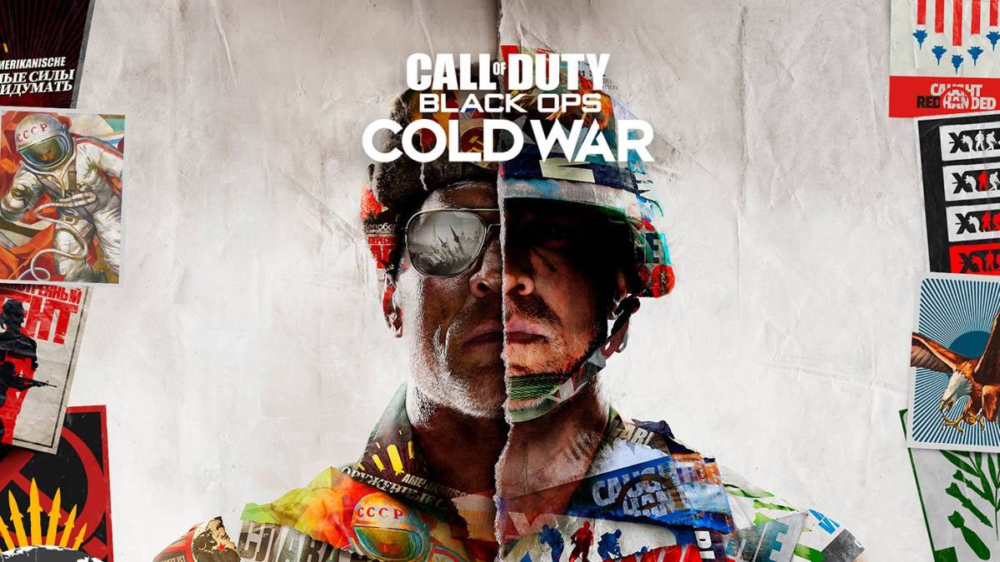
Info
Para los camuflajes de los fusiles tácticos, LMGs, pistolas y fusiles de asalto son los mismos desafios.

Camuflajes ciencia subfusiles y escopetas
Los desafíos de los camuflajes de ciencia en los subfusiles y escopetas cambian de eliminaciones de enemigos que se cubren a eliminaciones a quemarropa, esto significa el tener que matar a un enemigo a una distancia muy corta.
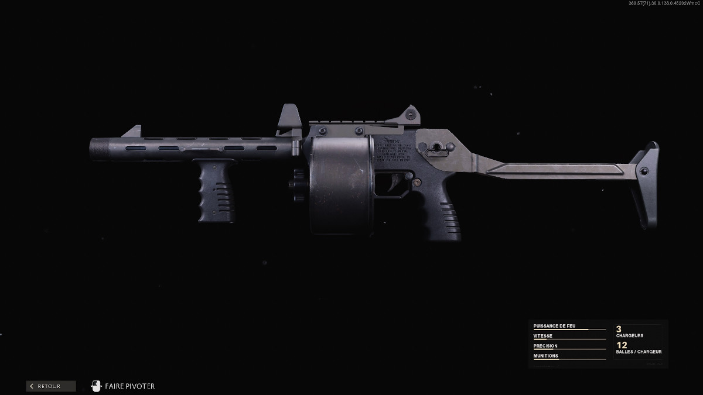
Escopetas
En las escopetas tendrás que conseguir 2 en oro, yo te recomiendo utilizar la Gallo y la Streetsweeper, pero si decides sacar la Hauer en oro solo ten paciencia, ya que es la más dificil de las 3.
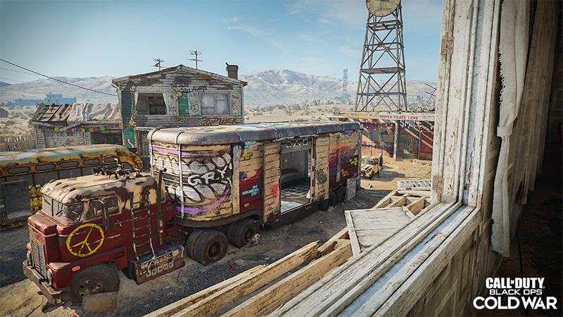
Nuketown el mapa ideal para las escopetas
En Nuketown extremo se pueden conseguir los camuflajes de las escopetas de manera rapida (excepto los de quemarropa), para conseguir los tiros lejanos tienes que usar un cañon especifico que te voy a mencionar a continuación.
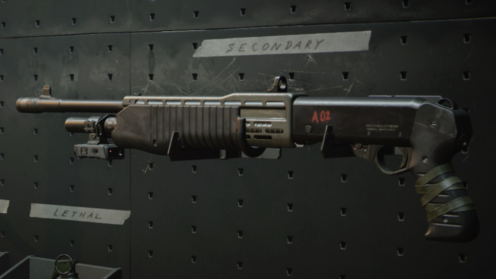
Como hacer los tiros lejanos
El cañon forjado a mano es el que yo recomendaría ponerle a cualquier escopeta, ya que en extremo este mata de 1 disparo en distancias absurdas para las escopetas.
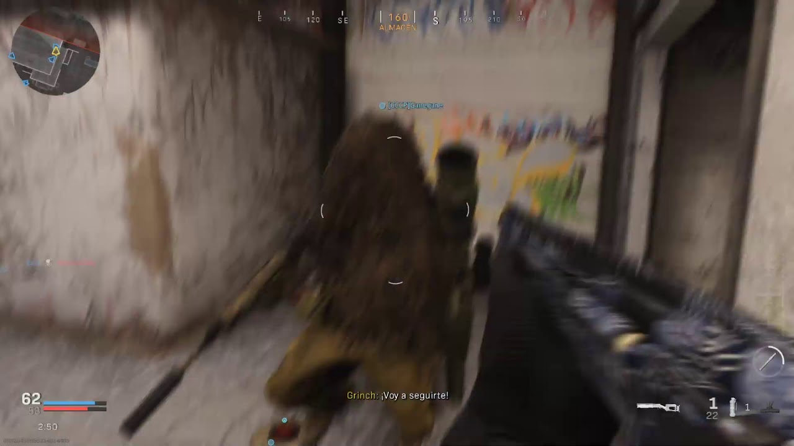
Bajas a quemarropa
Este desafío lo recomiendo hacer en el modo de juego 6c6, ya que son mapas pequeños donde las bajas a quemarropa no son un problema.
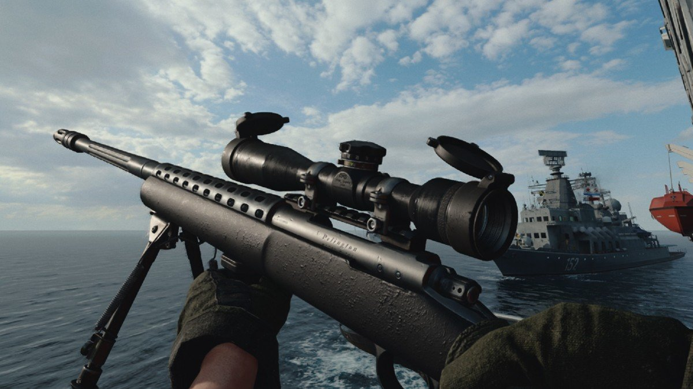
Sniper rifles
Para los francotiradores recomiendo sacarlos a quickscopes en partida rápida, y los francotiradores que recomiendo serían LW3 Tundra, Pelington y ZRG, el swiss k no lo recomiendo porque este pega demasiado hitmarker aún teniendo el último cañon.
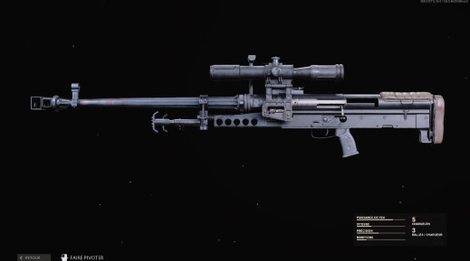
Consejo
Si no eres bueno con los quickscopes no te estreses es solo cuestión de practica y verás que en una semana los consigues en diamante.

Clases para los snipers
La clase que yo considero la mejor para cualquier sniper que utilizarás a quickscopes es está: último cañon si es swiss k o pelington, si no es así el cañon de velocidad de bala, foco de equipo tigre, primer cargador, vendaje aerotransportado y culata marathon.

Modos de juego de 1 vida
Los únicos modos de juego que no recomiendo cuando consigues materia oscura son los modos de juego de 1 vida, como buscar y destruir.
Como se consigue
En mi caso lo desbloqueé en modos de juego normal jugando 15 partidas matando de un disparo de francotirador y posteriormente matando con un cuchillo en una misma vida, pero también se puede hacer en extremo matando de un disparo con cualquier arma y en la misma vida matando a alguien con un cuchillo.
Consejo
Si vas a conseguir el cuchillo balístico con francotiradores no utilizes aquellos que puedan dar hitmarker como el Pelington, Swiss k o M82.
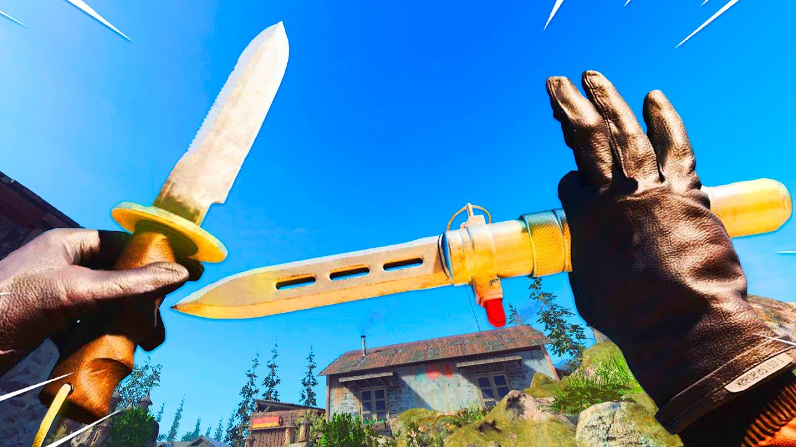
Balístico
Una vez desbloqueado te será más fácil conseguir las armas cac y especiales en diamante.
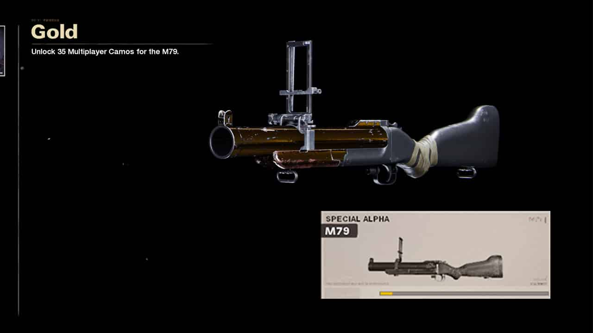
M79
Si no quieres conseguir el cuchillo balístico en oro la siguiente sección de los RPGs te puede servir para el M79.

Camuflajes ciencia
Para los camuflajes de ciencia de el cuchillo y el cuchillo balístico es mejor utilizar granadas de humo.

Consejo
Para los camuflajes de bajas rápidas es mejor hacerlos en mapas pequeños como los de 6c6.

Camuflajes rayas
Para conseguir estos camuflajes deberás conseguir una baja cac y con un proyectil en una misma vida.
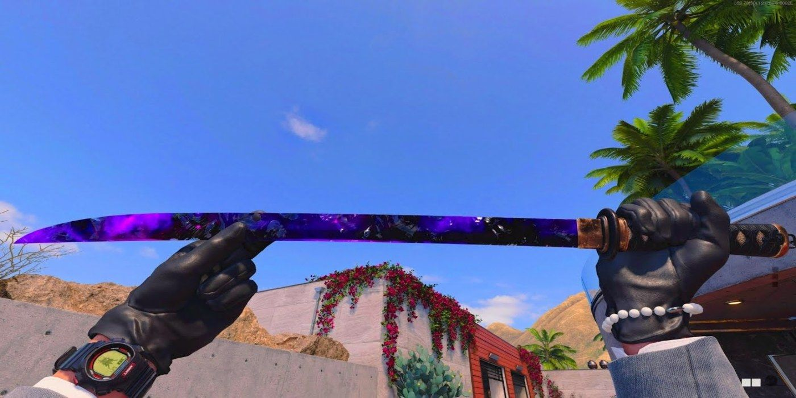
Armas cac
Al conseguir las armas cac puedes conseguir cualquiera ya sea el cuchillo, la wakizashi, el bate de beisbol o la pala.

Consejo
Si vas a conseguir materia oscura, desde un principio siempre lleva un lanzacohetes contigo y destruye cualquier racha que veas.

Rachas más fáciles para el rpg
Las rachas de puntos más fáciles de destruir con el rpg son el helicoptero de ataque, paquete de ayuda y torreta centinela.

Bajas
Los camuflajes de bajas, y bajas rápidas es recomendable que se hagan en extremo, también es recomendable siempre llevar la ventaja de traje antibombas porque la mayoría de las personas en extremo completan los desafíos de los lanzacohetes.
M79
Los camuflajes para el M79 son casi los mismos excepto por destruir rachas de bajas, y este también se puede conseguir de manera rápida en extremo.
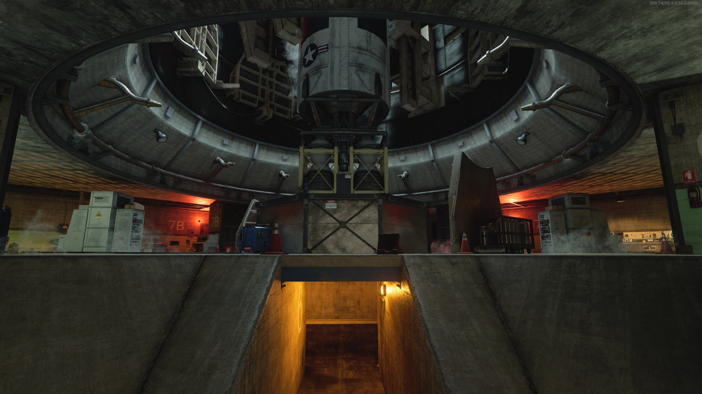
Consejo
La ICBM lo considero como uno de los mejores mapas para sacar cualquier camuflaje a excepción de las rachas bajas y los camuflajes para RPGs.
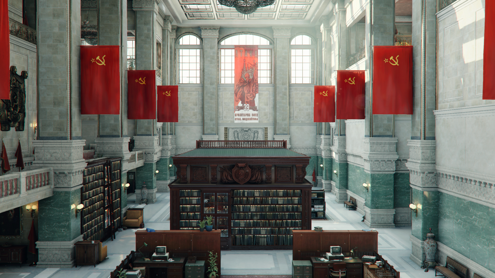
6c6
Los mapas 6c6 los considero los mejores para conseguir materia oscura, a excepción de los RPGs.
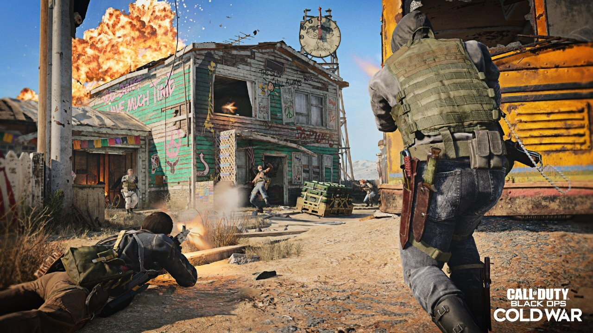
Nuketown
Nuketown extremo es el mejor mapa para conseguir tiros lejanos y conseguir bajas con RPGs.
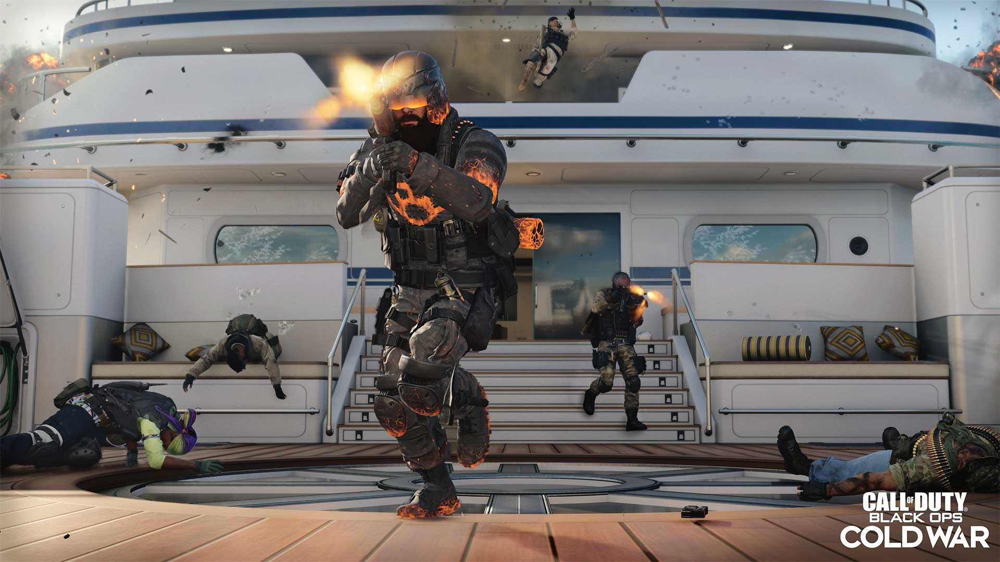
Hijacked
Hijacked extremo es una segunda opción en donde conseguir los RPGs en oro.